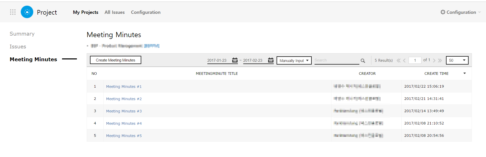
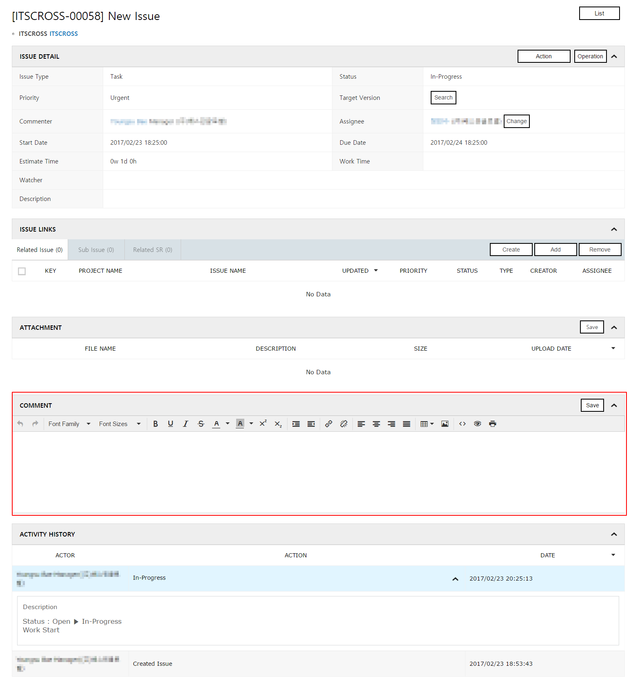
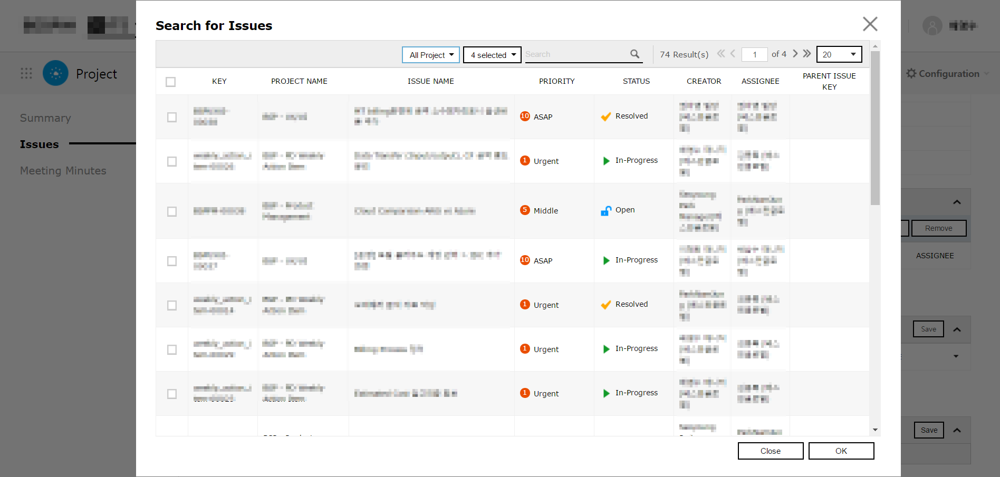
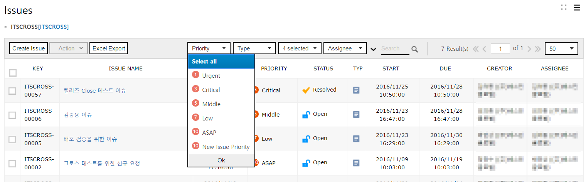
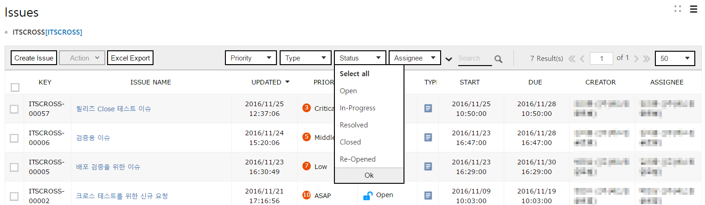

Project
You can register an issue for each project or team, and manage history of registered issues.
Managing Issue for Project/Team
Following is how to manage issues of each project or team with Project Service.
1. Creating Project/Team
Create a project or team and add members.
1.1 Creating Project/Team
Create a new project or team.
-
Click the [Create Project] button.

-
On the “Create Project” pane, enter details of the project or team.

No Name Required Description ① Project Name Required Enter the name of a new project or team you want to create. ② Project key Required Enter an identification code for a project or team.
Alphabets, numbers, ‘.’, ‘-‘, and ‘_’ only are allowed, up to 20 characters.③ Project Leader Required You can designate the leader of a project or team.
Click the [Search] button and the “Search Leader” pop-up is shown. You can select the leader of a project or team you want to add.
You cannot designate multiple leaders.④ Issue Type . You can select the type of issues performed by a project or team.
Click the [Search] button and the “Issue Type” pop-up is shown. From the list, you can select an issue to perform.⑤ Start Date Required You can set a start date of a project.
Its default value is the current date. Click the [Calendar] button to change the date on the calendar.⑥ Release Date . You can set a release date of a project.
Its default value is the current date. Click the [Calendar] button to change the date on the calendar.⑦ URL . You can enter URL through which a project is being served. ⑧ Description . Enter the details relevant to a project or team you want to create.
You can type freely with the text editor. -
Click the [Save] button.

-
Go to the project list by clicking the “My Project” menu. The project list shows that a newly created project has been added.

1.2 Editing Members
Add a member to do relevant issues to a newly created project or team.
Also, change members of an already added project or team.
-
From the project list, click the [Edit Member] button of the project you want to add/edit members.

-
A list on the left has all members, and that on the right has members who have been added to the current project or team. Select the member for the project or team from the left and add it to the right.
-
Set permission of a member who has been added to the right list.
-
Click the [OK] button to save changes. The project list shows a new member has been added to a project.

1.3 Setting Issue Type
By setting ‘Issue Type’, you can classify issues according to their types.
-
You can check the current list of Issue Type on the “Issue Type” menu.

-
On the “Issue Type” pane, click the [Create Issue Type] button.

-
The “Create Issue Type” pop-up will be shown and you can enter the information of a new Issue Type.

No Name Required Description ① Issue Type Code Required Enter an identification code for a new Issue Type. ② Issue Type Name Required Enter the name of Issue Type.
Texts which have been entered here will be the name of the issue.③ Order Required You can set an order in which the Issue Type list will be shown.
Only numbers are allowed.④ Description . You can enter details of Issue Type. ⑤ Icon Required You can upload an icon which will be shown on the Issue Type list. -
If you click the [OK] button, the pop-up will be closed. The Issue Type list shows a new Issue Type has been added.

1.4 Setting Issue Priority
Shows priority of an issue. You can set Issue Priority which can appoint process deadline.
-
Click the “Issue Priority” menu to check the current Issue Priority list.

-
On the “Issue Priority” pane, click the [Create New Priority] button.

-
On the “Create Issue Priority” pane, enter the information of Issue Priority you want to add.
No Name Required Description ① Issue Priority Code Required Enter an identification code for a new Issue Priority. ② Issue Priority Name Required Enter the name of Issue Priority.
Texts which have been entered here will be the name of Issue Priority.③ Order Required You can set the order in which the Issue Priority list will be shown.
Only numbers are allowed.④ Term (Unit:day) Required You can enter the deadline date for Issue Priority.
Only numbers are allowed.
When you select Issue Priority after you create an issue, the value entered here will be automatically calculated from the start date and will be shown as due date.⑤ Description . You can enter details of Issue Priority. -
If you click the [OK] button, the pop-up will be closed. The Issue Priority list shows a new Issue Priority has been added.
-
When a new issue is registered or pre-existed issues are edited, You can use the added Issue Priority. For more information about registering and editing issues, please refer to ‘Registering New Issue’.
2. Registering Issue and Managing Progress
You can register a new issue and manage progress of registered issues. With this, you can monitor progress status of issues for a project/team.
2.1 Registering New Issue
Register a new issue.
-
On the project/team list, click a project/team you want to register.

-
Click the “Issues” menu on the left and go to the Issue list.
-
On the “Issues” pane, click the [Create Issue] button.
-
On the “Create Issues” pane, enter informations of an Issue you want to create.

No Name Required Description ① Project Required You can select a project/team you want to register an issue to.
The selected project will be set as the default value. If you click the drop-down menu, created projects/teams will be shown on the drop-down list.② Issue Title Required Enter the title of an issue you want to register. ③ Issue Type Required You can select a type of issue.
If you click the drop-down menu, Issue Types which have already been registered will be shown on the drop-down list.④ Assignee Required You can select a Assignee of issue.
By clicking the [Search] button, you can designate the Assignee. One issue may not have more than one Assignee.⑤ Priority Required You can set a priority of issue.
If you click the drop-down menu, Issue Priorities which have already been registered will be shown on the drop-down list.⑥ Start Date Required You can set a start date – day/hour/minute – of an issue.
Its default value is the current time.⑦ Due Date Required You can set s due date of an issue.
As the default value, the date added the period set on the selected Issue Priority to the start date will be shown.⑧ Estimate Time . Shows time period which has been consumed for an issue.
Shows period – week/day/hour – from start date to due date.⑨ Watcher . You can select a Watcher of issue.
When registered issue status is changed, a Watcher of the issue may receive a notification for how it has been changed via e-mail.
By clicking the [Search] button, you can designate a Watcher. Multiple members may be registered as Watchers.⑩ Related Issue . 현You can set an issue related to the registered issue. ⑪ Related Service Request . You can set a service request related to the registered issue. ⑫ Description . You can enter details of an issue. ⑬ Attachment . You can upload files related to an issue.
Multiple files may be uploaded. -
Click the [Save] button to save entries. You can check that a new issue has been rightly added on the “Issues” pane.

2.2 Registering New Meeting Minutes
Create new meeting minutes.
-
On the project/team list, click a project/team you want to register a meeting minutes to.
-
On the left menu, click the “Meeting Minutes” menu and go to the meeting minutes list.

-
On the “Meeting Minutes” pane, click the [Create Meeting Minutes] button.
-
On the “Create Meeting Minutes” pane, write meeting minutes.

No Name Required Description ① Subject Required You can enter the title of meeting minutes. ② Description Required You can enter the content of the meeting.
Available formats for meeting minutes will be shown.
You can select the format from the list.③ Template . The selected format of meeting minutes will be shown. ④ Attachment . You can register attachments.
Multiple files may be uploaded.⑤ Action Item . You can set issues which are related to the registered meeting minutes. -
If you click the [Save] button, the “Confirm” pop-up appears. If you select ‘Send E-mail Notification’ on this pop-up, a notification for new meeting minutes will be sent to members of the project/team via e-mail.
-
On the “Meeting Minutes” pane, check that the new meeting minutes has been rightly added.

2.3 Recording Issue Progress
Records a progress of an issue. Members of the project/team can check on its progress.
-
On the project/team list, click the project/team you want to register a meeting minutes to.
-
On the issue list, click the issue you want to record progress of.
-
On the issue details, click the [Action] button. A drop-down menu on which the current status of the issue may be selected will be shown. Select status on the drop-down menu.
Status Description Open Means that a new issue has been registered, but it has not been initiated yet. In-progress Means that the Assignee is dealing with the issue. Resolve Means that the Assignee has completed the issue, but it still requires the final review or test. Close Means that the issue has been fully completed. Re-Open Means that the issue has already been completed, but it is required to be handled again; additional process is necessary or a problem has been found out. -
If you click a status of an issue on the drop-down menu, a pop-up on which a comment may be entered appears. Enter a comment about process status of the issue and click the [OK] button.
-
On the issue details, check that status of the issue has been rightly changed. When status of an issue is changed, members designated as the Assignee or Watcher will receive a notification for the change via e-mail.

3. Managing Issue History and Related Issue
3.1 Writing Comment
Write a comment about any matter which has occurred during the issue process.
-
On the project/team list, click a project/team on which an issue has been registered.
-
On the issue list, click an issue you want to write a comment to.
-
On the issue details, write a comment in the Comment box and click the [Save] button.

-
On the issue details, you can check the comment which has been written on the ‘Activity History’.

- Perform a task required to resolve an alarm. Register an issue required to resolve the alarm on Project App. For more information about how to register issues related to alarm resolution, please refer to '4. Managing Alarm History and Related Issue' below.
3.2 Registering Related Issue
You can register an issue related to the registered issue/service request. With this, you can check linkage/interrelation between issues.
-
On the project/team list, click a project/team on which an issue has been registered.
-
On the issue list, click an issue to which the issue will be related/subordinate/service-requested.
-
On the Issue Links list, click the tab appropriate for type of the issue you want to link.
Type Description Releated Issue Means that the issue is related to the selected issue. Sub-Issue This issue is subordinate to the selected issue.
You can register the issue after dividing it into subunit.Related SR Means the service request of the requested issue.
You can link service request which is registered on Service Request. - Click the [Create] button to register a new related/subordinate issue, or click the [Add] button to register a pre-existed issue as related/subordinate/service request.
-
If you click the [Add] button, the “Search for Issue/SR” pop-up appears. All issues/service requests of one’s own project/team are shown on the pop-up. On the pop-up, you can select an issue/service request you want to link.

-
After selecting an issue/service request you want to link, click the [OK] button. The “Issue Links” will show that the issue/service request has been linked.

3.3 View Issue History
You can check progress history of issue.
-
On the project/team list, click a project/team on which an issue has been registered.
-
Click the issue you want to check the progress of.
-
From the Activity History on the issue details pane, you can check issue history including how status, the Assignee and comments have changed or updated.

4. Searching Issue History
You can search the Issue and its details you want to check by setting conditions and entering keywords.
4.1 Searching by Conditions
-
Select a condition you want to search. Click the [Priority], [Type], [Status], [Assignee] button, then a drop-down menu appears to show available conditions for search.
-
Select ‘Priority’

-
Select 'Type'

-
Select 'Status'

-
Select 'Assignee'

-
Select ‘Priority’
-
Click the [OK] button of the drop-down menu.

-
You can check the search result with the selected condition on the Issue list.

4.2 Searching by Keywords
-
Enter a keyword you want to search on the search box and click [Search] button or press [Enter].

-
The results which title is identical to the keyword will be shown on the list. Texts identical to the keyword will be highlighted.